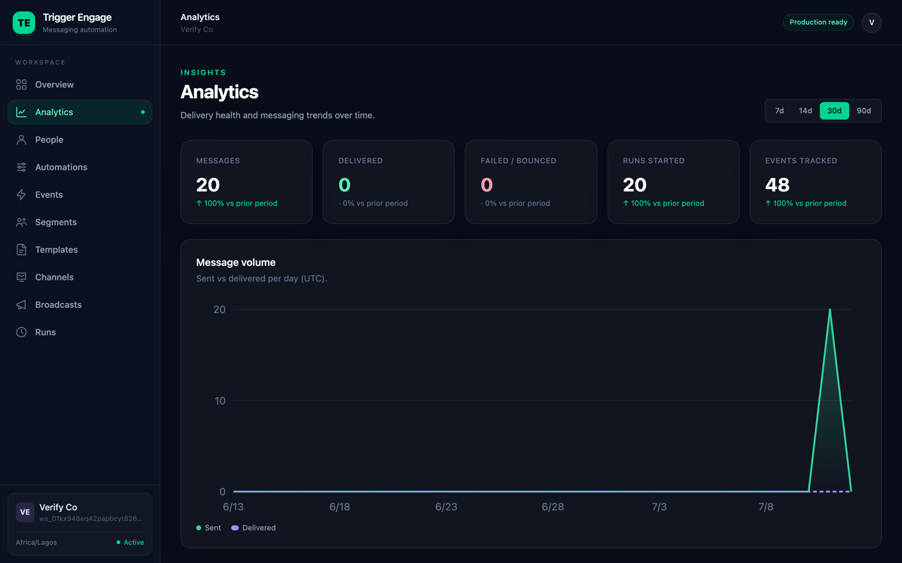

Marketing automation is software that sends the right message to the right person at the right time — automatically, based on data and behavior. Instead of blasting the same newsletter to everyone, a marketing automation platform reacts to what each person actually does: signs up, tries a feature, abandons a cart, goes quiet. This guide explains how it actually works, the building blocks every platform shares, and how to choose — or self-host — the one that fits your team.

What is marketing automation?
Marketing automation is the shift from manual, one-off sends to triggered, personalized workflows that run across channels without someone pressing "send" each time. In a manual world, a marketer writes an email, picks a list, and broadcasts it. Everyone gets the same thing on the same day regardless of where they are in their journey.
Automation flips that. You define the logic once — "when a new user finishes onboarding but hasn't invited a teammate, wait two days, then send a nudge" — and the platform executes it for every person, forever, in real time. The message is triggered by behavior, personalized with data you already hold, and measured automatically. That's the whole idea: fewer campaigns you babysit, more systems that run themselves.
The building blocks
Almost every marketing automation platform, whether hosted or self-hosted, is built from the same five parts. Understand these and you understand the category.
Events & data (what people do)
Everything starts with data. Two kinds matter: attributes (who someone is — plan, country, signup date) and events (what someone did — signed_up, completed_lesson, purchase). Events are the heartbeat of automation; they're what your workflows listen for. Getting them into your platform is mostly an engineering task — for a practical walkthrough of instrumenting them in a PHP stack, see event-based emails in Laravel. The rule of thumb: instrument the handful of events that map to real value first, and expand later.
Segments (who to target)
A segment is a live query over your data: "trial users in Nigeria who logged in this week," "customers who haven't purchased in 60 days." Good segments update themselves — as people's behavior changes, they flow in and out automatically, no manual list maintenance. This is the engine behind personalization, and it deserves real thought; our guide to behavioral segmentation covers how to build segments from actions rather than guesses.
Journeys / workflows (the automation graph)
Journeys are where it comes together. A journey is a graph: a trigger starts it (an event or a segment entry), delays space out the messages, branches split people by condition (opened vs. didn't, purchased vs. didn't), sends deliver the messages, and goals define success and exit people who convert. Most valuable automations are multi-step sequences — see lifecycle email sequences for concrete onboarding-to-win-back examples you can copy.
Channels (email, SMS, push)
A journey shouldn't care whether a step is an email, an SMS, or a push notification — the channel is just the delivery mechanism at the end of a branch. Mature platforms let you mix them: email for detail, SMS for urgency, push for re-engagement. The best channel depends on the message and the person's preferences, and a good automation graph lets you switch or combine them without rebuilding the logic.
Testing & analytics
If you can't measure it, you're guessing. Every send should feed back conversion, open, and click data so you can see which journeys move the needle. Beyond reporting, A/B testing lets you split traffic across subject lines, copy, or timing and let the numbers decide. Automation without measurement is just faster guessing.
What you can automate
Once the building blocks are in place, the same machinery powers a surprising range of programs:
- Onboarding — guide new users to their first win. See onboarding emails for templates that drive activation.
- Drip campaigns — a fixed, time-based sequence that educates or warms up a lead. Our drip campaigns guide covers when a simple drip beats a complex journey.
- Lead nurture — move prospects from curious to ready-to-buy with content matched to their stage.
- Retention and win-back — spot people going quiet and re-engage them before they churn.
- Transactional notifications — receipts, password resets, and alerts triggered by a single event.
Marketing automation vs email marketing vs CRM
These three overlap enough to cause real confusion. Here's how they differ in practice:
| Capability | Email marketing | Marketing automation | CRM |
|---|---|---|---|
| Primary job | Broadcast campaigns to lists | Trigger messages from behavior | Store & manage relationships |
| Trigger | Manual send | Events, segments, schedules | Sales rep action |
| Channels | Email, SMS, push | Usually none (data layer) | |
| Personalization | Basic merge fields | Behavior-driven, per-person | Contact-record based |
| Best for | Newsletters | Lifecycle & onboarding | Sales pipelines |
In short: email marketing is a subset of what automation does, and a CRM is the system of record automation often reads from. Many teams run all three — the automation platform is the layer that turns CRM data and events into timely messages.
Build, buy, or self-host?
There are three honest ways to get marketing automation, and the right one depends on your team.
- Buy (hosted SaaS) — fastest to start, no infrastructure to run. The trade-off is cost that scales with your audience: most hosted tools charge per profile, so your bill grows as you grow, and your customer data lives on someone else's servers. Positioning-wise, these are the polished, marketer-friendly platforms — quick to launch, expensive at scale.
- Build — total control and no per-profile fee, but you're now maintaining a messaging platform instead of your product. Realistic only for teams with spare engineering capacity and a genuinely unusual requirement.
- Self-host open source — you own your data, pay no per-profile fee, and still get a real platform rather than a pile of cron jobs. You do run the infrastructure, but for many teams that's a fair trade for cost control and data ownership.
If you're weighing the hosted option against alternatives, our roundup of Customer.io alternatives compares six options across cost and control. For teams on PHP, TriggerEngage is the open-source, self-hosted choice built for Laravel: it's MIT-licensed and free with no per-profile fee, takes your events, turns them into self-updating rule-based segments, runs visual journeys with A/B split and analytics, and sends email, SMS, and push. You can self-host it or embed it in an existing app. For context, a typical hosted entry plan runs around $100/month for roughly 12,000 profiles — TriggerEngage removes that per-profile line item entirely.
How to get started
Resist the urge to automate everything at once. The pattern that works:
- Start with one high-value journey. Onboarding is almost always the best first choice — it has the clearest goal (activation) and the biggest payoff.
- Instrument the key events. You only need the few events that mark real progress: signup, first meaningful action, activation.
- Measure activation. Watch whether the journey actually moves your activation rate, and use A/B testing to sharpen the weak steps.
- Then expand. Once onboarding earns its keep, add nurture, retention, and win-back on the same foundation.
One working journey teaches you more than a month of planning. Ship it, measure it, and let the results tell you what to build next.